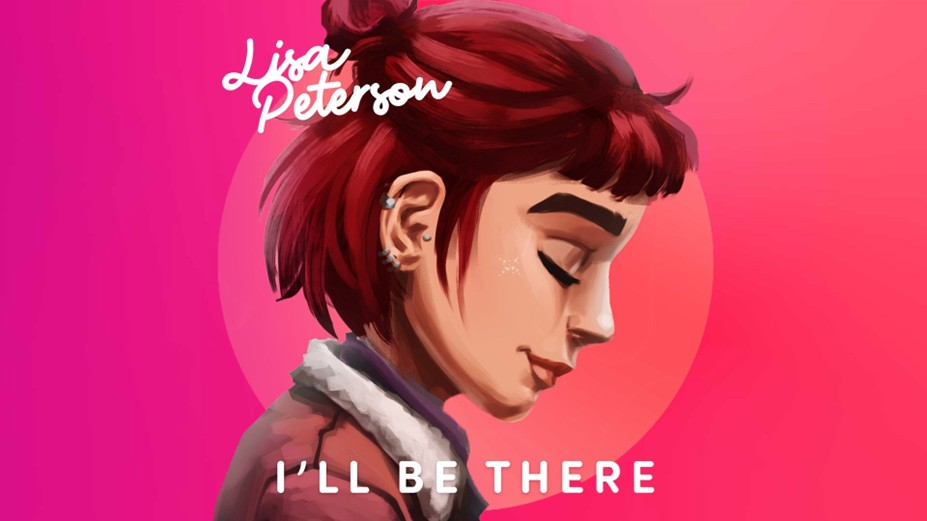

Every new star starts off with a first single! And for Lisa Peterson, it was the friendship anthem I’ll Be There – because, as the Soul Riders say, “alone we’re strong, together we’re unstoppable”. Right here you’ll find the video co-created with Star Stable fans, lyrics and more!
Official music video for I’ll Be There
With the help of friends, anything can be a little bit easier. Many have contributed to make this video possible and beautiful. Don’t miss the official music video of Lisa’s single I’ll Be There!
